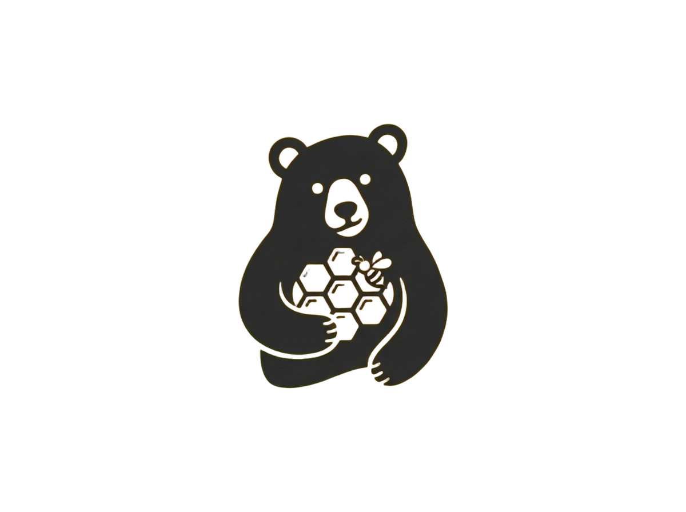

<!DOCTYPE html>
<html lang="en">
<head>
  <meta charset="UTF-8">
  <meta name="viewport" content="width=device-width, initial-scale=1.0">
  <title>beebear — Hexagonal Architecture Framework for Node.js/TypeScript</title>
  <meta name="description" content="beebear is a lightweight, decorator-free hexagonal architecture framework for Node.js/TypeScript. Zero runtime dependencies.">

  <!-- Fonts -->
  <link rel="preconnect" href="https://fonts.googleapis.com">
  <link rel="preconnect" href="https://fonts.gstatic.com" crossorigin>
  <link href="https://fonts.googleapis.com/css2?family=DM+Sans:wght@400;500;600;700;800&family=JetBrains+Mono:wght@400;500;600&display=swap" rel="stylesheet">

  <!-- Prism.js -->
  <link href="https://cdnjs.cloudflare.com/ajax/libs/prism/1.29.0/themes/prism-tomorrow.min.css" rel="stylesheet">

  <!-- App Styles -->
  <link rel="stylesheet" href="style.css">

  <!-- Favicon -->
  <link rel="icon" type="image/png" href="favicon.png">
</head>
<body>

  <!-- ── Sidebar ─────────────────────────────────────────── -->
  <aside class="sidebar">
    <div class="sidebar-logo">
      
    </div>

    <nav class="sidebar-nav" id="sidebar-nav">
      <!-- Built dynamically by app.js -->
    </nav>
  </aside>

  <!-- ── Mobile header (hamburger) ───────────────────────── -->
  <button class="mobile-toggle" id="mobile-toggle" aria-label="Toggle navigation">
    <svg width="22" height="22" viewBox="0 0 22 22" fill="none" stroke="currentColor" stroke-width="2" stroke-linecap="round">
      <line x1="3" y1="6" x2="19" y2="6"/>
      <line x1="3" y1="11" x2="19" y2="11"/>
      <line x1="3" y1="16" x2="19" y2="16"/>
    </svg>
  </button>

  <!-- ── Main Content ────────────────────────────────────── -->
  <main class="main-content">
    <article class="doc-card" id="doc-content">
      <!-- Content rendered by app.js -->
    </article>
  </main>

  <!-- Right TOC bar -->
  <aside class="toc-bar" id="toc-bar"></aside>

  <!-- Theme toggle -->
  <button class="theme-toggle" id="theme-toggle" aria-label="Toggle dark mode">
    <svg class="theme-icon moon" width="16" height="16" viewBox="0 0 24 24" fill="none" stroke="currentColor" stroke-width="2" stroke-linecap="round" stroke-linejoin="round">
      <path d="M21 12.79A9 9 0 1 1 11.21 3 7 7 0 0 0 21 12.79z"/>
    </svg>
    <svg class="theme-icon sun" width="16" height="16" viewBox="0 0 24 24" fill="none" stroke="currentColor" stroke-width="2" stroke-linecap="round" stroke-linejoin="round">
      <circle cx="12" cy="12" r="5"/><line x1="12" y1="1" x2="12" y2="3"/><line x1="12" y1="21" x2="12" y2="23"/><line x1="4.22" y1="4.22" x2="5.64" y2="5.64"/><line x1="18.36" y1="18.36" x2="19.78" y2="19.78"/><line x1="1" y1="12" x2="3" y2="12"/><line x1="21" y1="12" x2="23" y2="12"/><line x1="4.22" y1="19.78" x2="5.64" y2="18.36"/><line x1="18.36" y1="5.64" x2="19.78" y2="4.22"/>
    </svg>
  </button>

  <!-- Overlay for mobile -->
  <div class="sidebar-overlay" id="sidebar-overlay"></div>

  <!-- Prism.js -->
  <script src="https://cdnjs.cloudflare.com/ajax/libs/prism/1.29.0/prism.min.js"></script>
  <script src="https://cdnjs.cloudflare.com/ajax/libs/prism/1.29.0/components/prism-typescript.min.js"></script>
  <script src="https://cdnjs.cloudflare.com/ajax/libs/prism/1.29.0/components/prism-json.min.js"></script>
  <script src="https://cdnjs.cloudflare.com/ajax/libs/prism/1.29.0/components/prism-bash.min.js"></script>

  <!-- App -->
  <script src="app.js"></script>
</body>
</html>
